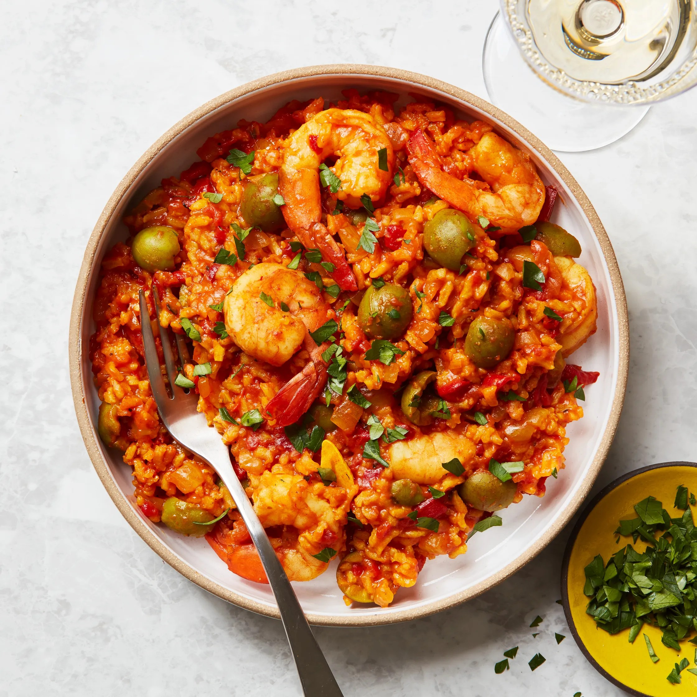

One-Pot Spiced Shrimp and Rice

Truly a one-pot wonder, this dish is homey, comforting, and
weeknight-friendly (thanks to the minimal cleanup). Rinse your rice
until the water runs clear before adding to keep the grains from going
clumpy or gummy in the pot.
Ingredients (4 servings)
Sauce
- 2 Tbsp. extra-virgin olive oil
- 1 medium onion, finely chopped
- 4 garlic cloves, thinly sliced
-
1 (16-oz.) jar roasted red peppers, drained, finely chopped (about 1¾
cups)
- 1 tsp. Diamond Crystal or ½ tsp. Morton kosher salt
- Freshly ground black pepper
- 1 cup green olives, smashed, pits removed
- 2 Tbsp. double-concentrated tomato paste
- ¼ tsp. crushed red pepper flakes
- 1 (14-oz.) can whole peeled tomatoes
Shrimp and assembly
- 1 lb. large shrimp, peeled, deveined
- Kosher salt, freshly ground pepper
- 1 cup jasmine rice, rinsed until water runs clear
- 1 tsp. ground cumin
- 1 tsp. ground turmeric
- 2¾ cups low-sodium vegetable broth or water
- Chopped parsley (for serving)
Steps
Sauce
-
Heat oil in a medium Dutch oven or other heavy pot over medium-high.
Cook onion and garlic, stirring occasionally, until onion is slightly
softened, about 4 minutes. Add roasted red peppers and salt; season
with black pepper. Cook, stirring occasionally, until mixture is
jammy, 8–10 minutes. Add olives, tomato paste, and red pepper flakes
and cook, stirring often, until paste is slightly darkened in color,
about 3 minutes. Add tomatoes, crushing with your hands as you go, and
their liquid and cook, stirring often, until slightly thickened, about
4 minutes.
Shrimp and assembly
-
While the sauce is cooking, pat shrimp dry with paper towels. Season
with salt and pepper; set aside.
-
Stir rice, cumin, and turmeric into sauce, then pour in broth.
Increase heat to high and bring to a boil. Cover pot, reduce heat to
medium-low, and simmer, adjusting heat to low to maintain a simmer if
needed, until rice is tender and liquid is mostly absorbed, about 15
minutes.
-
Uncover pot and stir in reserved shrimp. Re-cover pot and cook until
shrimp are opaque throughout, about 3 minutes.
- Divide shrimp and rice among bowls and top with parsley.